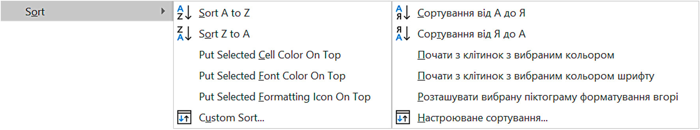
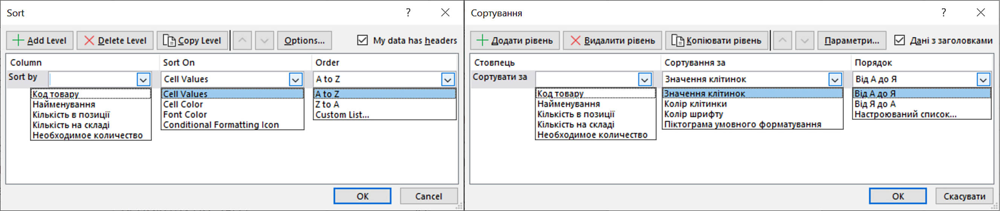
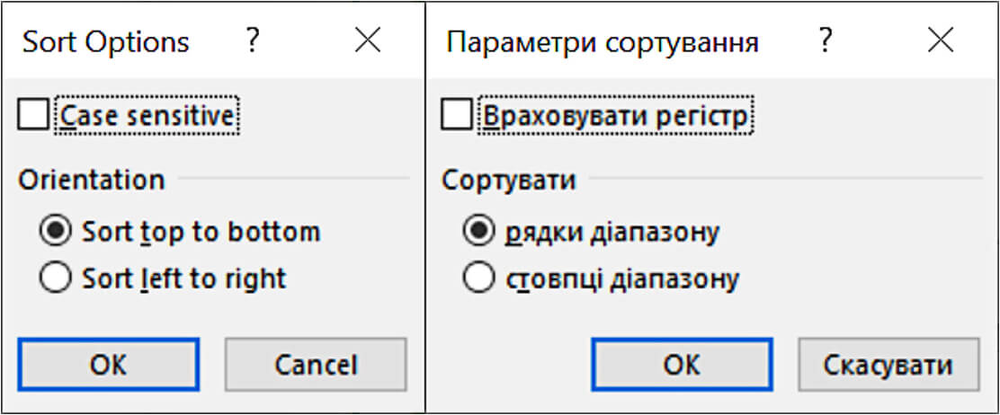
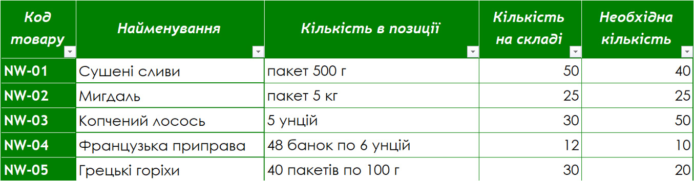
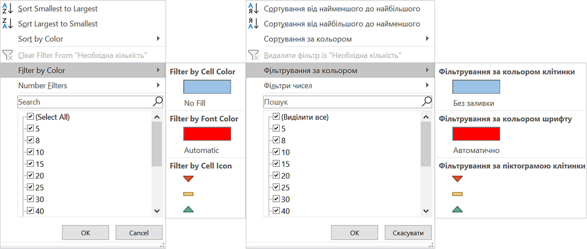
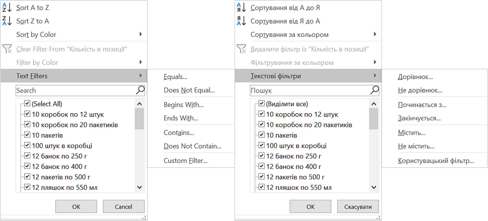
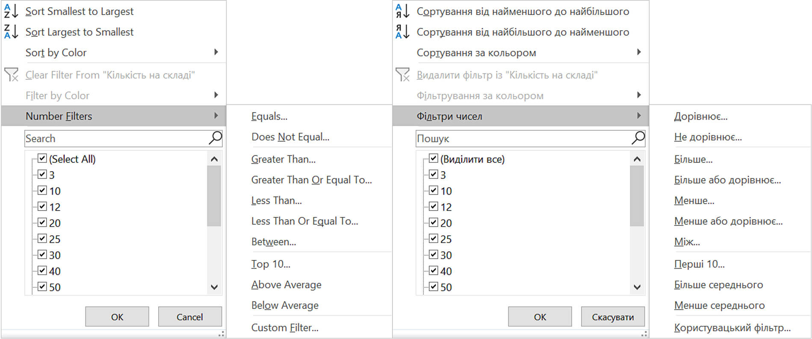
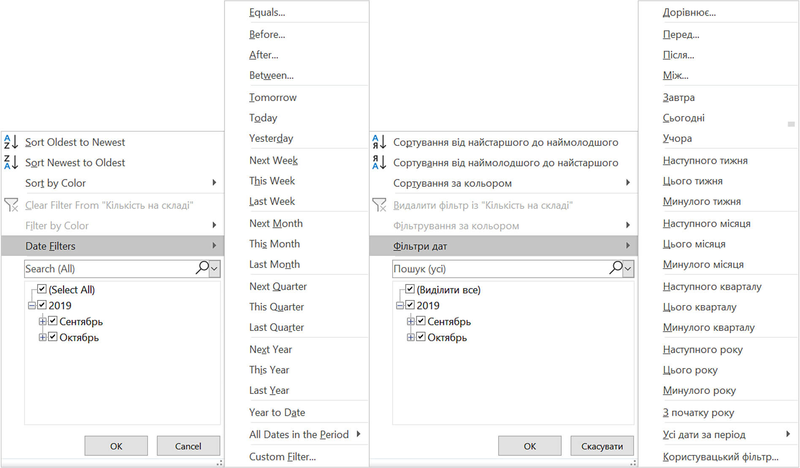
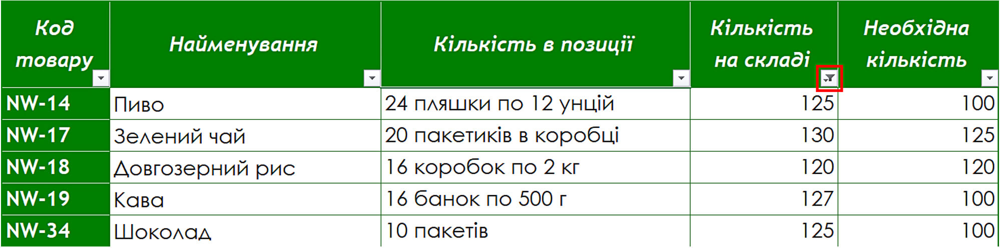
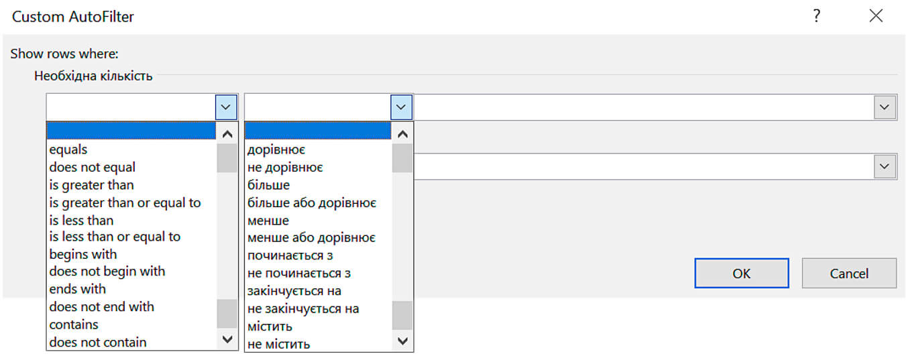

Сортування та фільтрація даних в Microsoft Excel
Сортування даних.
Сортування даних – це впорядкування даних у стовпцях електронної таблиці за одним або кількома заданими критеріями.
Види сортування в Excel за:
- зростанням;
- спаданням;
- кольором клітинки;
- кольором тексту;
- піктограмою умовного форматування.
Порядок сортування залежить від типу даних. Тобто, упорядкування даних здійснюється з урахуванням розміщення символів у кодовій таблиці Unicode.
Сортування даних в електронній таблиці відбувається за:
- текстом (від А до Я або від Я до А);
- числами (від Min до Max або від Max до Min);
- датою та часом (від старих до нових або від нових до старих).
Правила сортування даних:
- якщо стовпець містить дані різних типів, то після сортування вони розмістяться в такому порядку:
- числові;
- дата/час;
- текстові;
- логічні.
- текстові дані розташовуються в наступному порядку:
- спочатку латиниця потім кирилиця;
- текст з символом пропуску на початку буде вищім за інші.
Сортування не можна застосувати в таблицях, в яких є об'єднані клітинки!
Сортування даних за одним стовпчиком.
- зробити поточною будь-яку клітинку стовпця електронної таблиці у якому буде відбуватися сортування (стовпець не виділяти!);
- перейти до вкладки Home (Основне), у розділі Editing (Редагування) обрати параметр Sort&Filter (Сортувати й Фільтрувати);
- далі обрати напрям сортування: A/Z (за зростанням) або Z/A (за спаданням).
- зробити поточною будь-яку клітинку стовпця електронної таблиці у якому буде відбуватися сортування (стовпець не виділяти!);
- перейти до вкладки Data (Дані), у розділі Sort&Filter (Сортування й Фільтр) обрати напрям сортування: A/Z (за зростанням) або Z/A (за спаданням).
- кликнути правою кнопкою миші на клітинку стовпця у якому буде відбуватися сортування;
- у контекстному меню обрати параметр Sort (Сортування), а далі – потрібний варіант сортування.

Багаторівневе сортування.
- зробити поточною будь-яку клітинку електронної таблиці, але якщо таблиця містить пусті рядки або стовпці треба виділити усю таблицю разом з заголовками;
- перейти до вкладки Data (Дані), у розділі Sort&Filter (Сортування й Фільтр) обрати параметр Sort (Сортувати);
- у вікні Sort (Сортування) налаштувати послідовність сортування стовпців.
- кликнути правою кнопкою миші на будь-яку клітинку електронної таблиці;
- у контекстному меню обрати параметр Sort (Сортування) і далі у списку Custom Sort (Настроюване сортування);
- у вікні Sort (Сортування) налаштувати послідовність сортування стовпців.

Роздивимося уважно які можливості дає Excel для налаштування багаторівневого сортування даних. В першу чергу, за допомоги верхніх кнопок можна: додавати, видаляти, копіювати або змінювати чергу сортування.
Далі, коли рівень сортування додано потрібно його налаштувати, тобто вказати:
- стовпець у якому буде виконуватися сортування – Column (Стовпець);
- параметр сортування – Sort on (Сортувати за);
- напрям сортування – Order (Порядок).
Сортувати можна не тільки рядки але й стовпці. За замовчуванням в Excel встановлюється режим сортування рядків за значеннями у стовпцях. Для зміни цього режиму сортування потрібно у вікні Sort (Сортування) натиснути на кнопку Options (Параметри), а потім у вікні Sort Options (Параметри сортування) встановити відповідний перемикач у групі Orientation (Орієнтація). Якщо треба враховувати регістр букв (великі – малі), під час сортування, в цьому ж вікні встановіть галочку навпроти напису Case sensetive (Враховувати регістр).

Фільтрація або вибір даних.
Фільтрація – це відбір тих рядків таблиці, значення яких задовольняють обраним умовам в стовпцях.
Встановлення фільтрів:
- зробити поточною будь-яку клітинку електронної таблиці;
- перейти до вкладки Home (Основне), у розділі Editing (Редагування) обрати параметр Sort&Filter (Сортувати й Фільтрувати);
- далі обрати властивість Filter (Фільтр).
- зробити поточною будь-яку клітинку електронної таблиці;
- перейти до вкладки Data (Дані), у розділі Sort&Filter (Сортування й Фільтр) обрати параметр Filter (Фільтр).

Після виконання цих дій, в клітинках що містять заголовки стовпчика з’являться кнопки відкриття списку команд фільтрування.
Види фільтрів:
- фільтрування за кольором:
- клітинки;
- тексту;
- за піктограмою.

- в залежності від вмісту клітинки:
- Текстові фільтри;
- Числові фільтри;
- Фільтри за датою.



Після того, як ми застосуємо фільтр до будь-якого із стовпців електронної таблиці, кнопка фільтру зміниться на наступну.

Наявність такої кнопки в клітинці вказує, що у даному стовпці вже встановлений фільтр який відображає певні дані.
Фільтрування можна здійснювати послідовно для кількох стовпців електронної таблиці.
Тоді, кожний наступний фільтр буде застосований уже тільки для тих рядків таблиці, які відображаються після застосування всіх попередніх фільтрів. Тобто загальна умова фільтрування – це умови фільтрування для кожного стовпця, об’єднані логічною операцією i.
Також можна встановлювати декілька параметрів фільтрування даних для одного стовпця електронної таблиці. Наприклад, користувачу потрібно встановити граничні межі для фільтрування числових даних у таблиці, ≤30 та >100. Ставити галочки навпроти потрібних значень, якщо їх достатньо багато кожного разу не доцільно, тому можна скористатися Custom Filter (Користувацьким фільтром).
